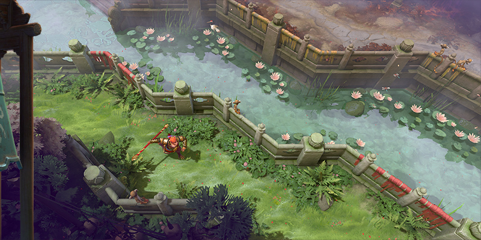
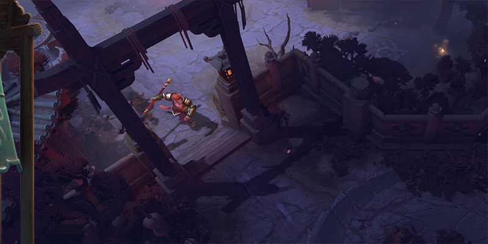
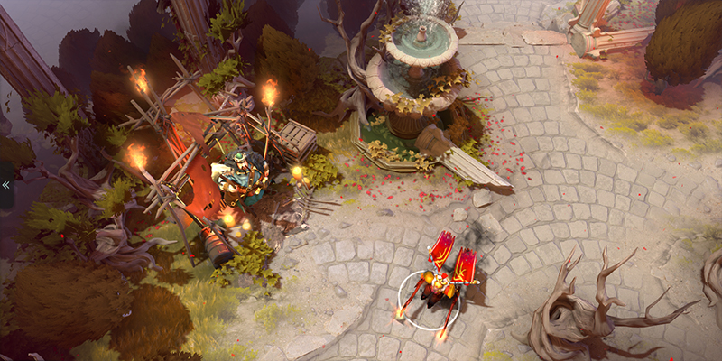
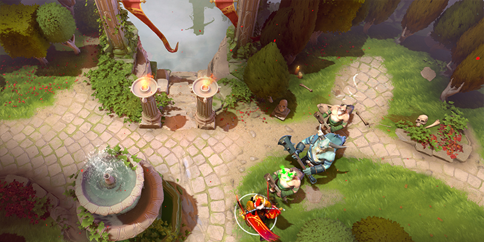
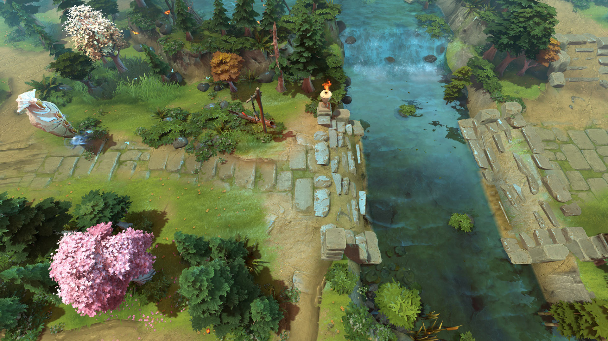
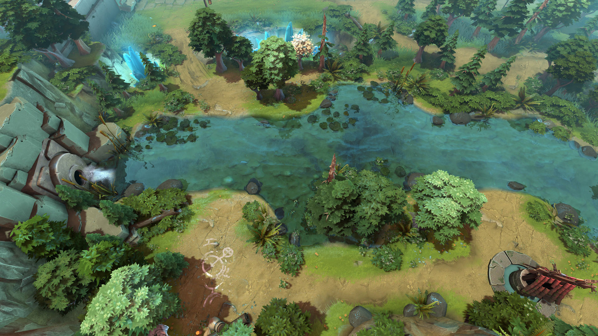

先选场景方向，再做局部样板
下面是 Valve 官方页面中的地形实景展示，保留原图。它们用于选视觉方向，不代表已确认整套资源可以直接移植到当前项目。
先选一组作为主要参考，也可以明确指出另一组中只想借鉴的部分，例如“以 A 为主，水边参考 C”。重点比较地形轮廓、材质尺度、颜色与明暗、植被分布。暂不修改整张地图。
A · 大圣的新游记
重点看东方园林的整体搭配：石路、岸边构件、松树与草地的比例。作为修仙风格的起点候选。 官方出处

A1 · 点击放大 原图
A2 · 点击放大 原图B · 不朽庭院
重点比较石材铺装的细节与地面、植被之间的边界处理。留意规整庭院是否符合你想要的感觉。 官方出处

B1 · 点击放大 原图
B2 · 点击放大 原图C · 官方天辉河岸 · Wandering Waters
重点看自然岸坡、石块、树丛与水面如何组合。适合判断你更喜欢自然山水还是人工庭院。 官方出处

C1 · 点击放大 原图
C2 · 点击放大 原图选定后的执行范围
先核对本地材质、法线、混合遮罩、模型和着色器。只做一块约一至两屏大小的实机样板：一座岛的岸边、草地、石路、台阶和相邻水面。固定正常游戏视角与近景，对照参考逐项调整；样板认可后再扩展到其他房间与全图。
现有格局保留为工作底稿；本轮圆形岛的外观尚未获认可，不作为最终美术基准。不要把概念图或这些整张截图直接当作材质。